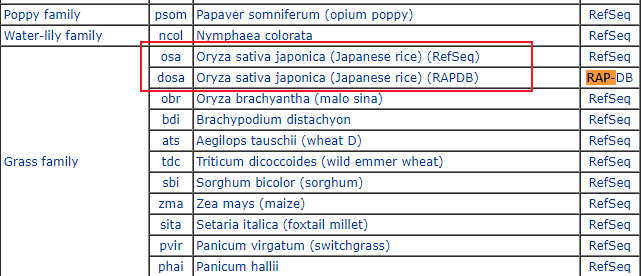
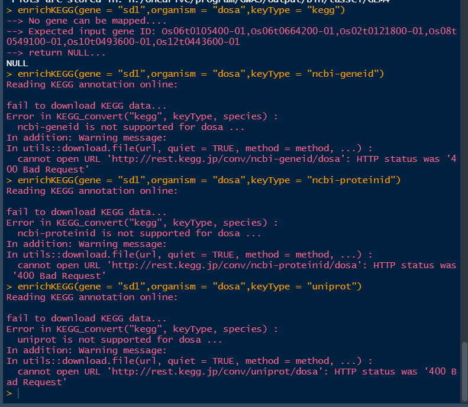

how to start GO & KEGG by clusterProfiler
1、GO分析
2、KEGG分析
Y叔的clusterProfiler可能是目前KEGG富集分析最好的软件，因为能爬取最新的KEGG在线版数据库，而不是用不再更新的KEGG.db。
enrichKEGG 函数介绍：
1 | enrichKEGG(gene, organism = "hsa", keyType = "kegg", pvalueCutoff = 0.05, |
分析思路
organism
首先确定自己要研究的物种，在这里我们研究对象是水稻。所以打开KEGG Organisms: Complete Genomes，搜索Oryza sativa

上图左边的osa和dosa就是要填到organism里的参数，选择其中一个就行，这里推荐dosa
keyTypes
可以把enrichKEGG当作浏览器，试出合适的keytypes。

因此，我们需要提供的keyType是kegg，基因名应该类似于Os06t0664200-01.
按照同样的套路，对于
osa的kegg命名方式应该3131385能够用于在NCBI上查找的gene ID。
基因ID转换
通常情况下，我们获取的基因ID往往是LOC_Os01g24710或Os01g0348900
的形式，那么应该怎么转换为Os01g0348900-01呢？
首先去相关数据库https://shigen.nig.ac.jp/rice/oryzabase/ 下载id文件，通过一行命令完成转换
1 | cat salt.txt | xargs -i awk 'BEGIN{FS="\t"} $0 ~/{}/ { print $2}' rice_id_20140620174522.txt > RAP_id.txt |
本博客所有文章除特别声明外，均采用 CC BY-NC-SA 4.0 许可协议。转载请注明来自 小梁的个人空间！